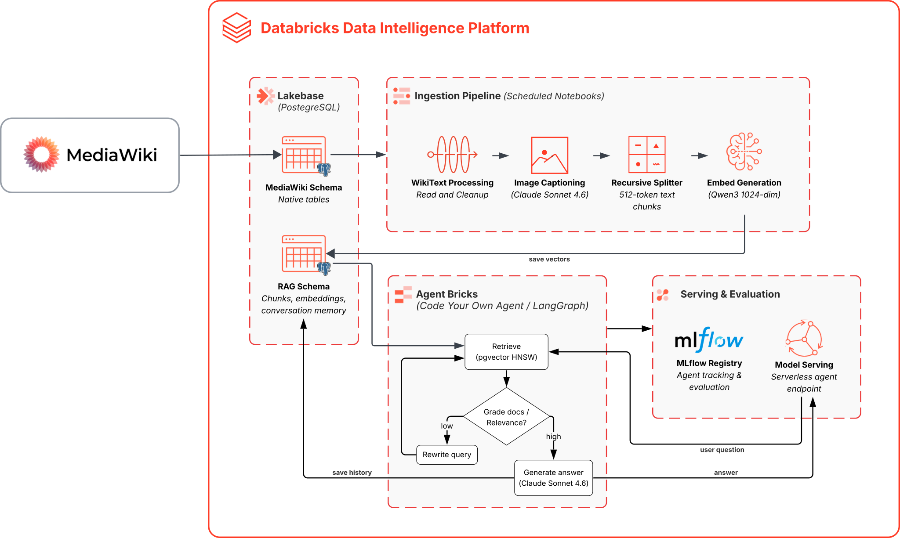
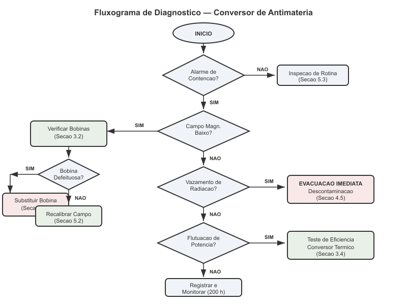
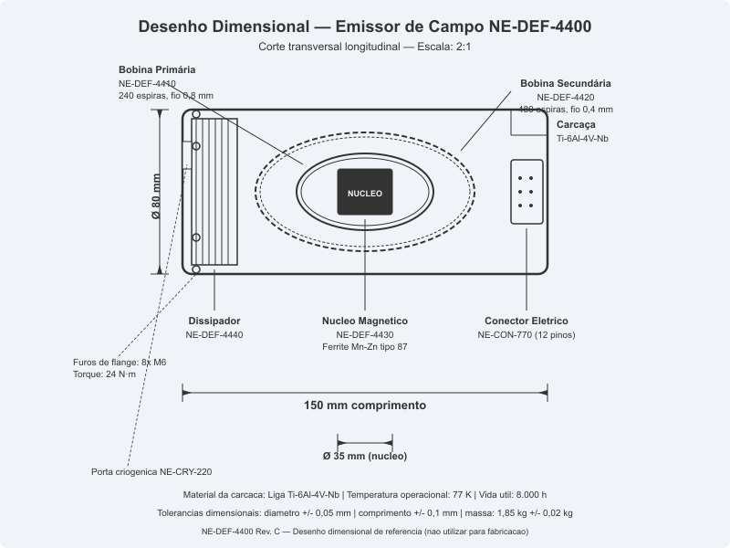
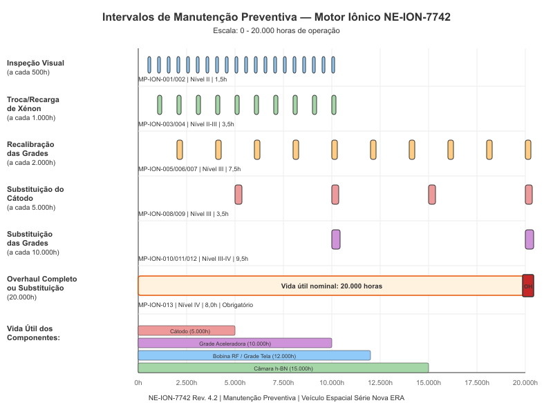

Texto e imagens interpretados por Vision LLM, recuperados por similaridade vetorial
e sintetizados por um agente LangGraph — 100% na plataforma Databricks
Allex Lima · AI/ML Specialist Solutions Architect, Databricks Brasil
Cada componente roda dentro da plataforma Databricks

Orquestrado por Declarative Automation Bundles · Avaliado com MLflow GenAI Evaluation
Banco relacional gerenciado pela Databricks com autoscaling, scale-to-zero e extensão pgvector nativa
Papel duplo: uma única instância Lakebase hospeda tanto o banco do MediaWiki (mediawiki.*) quanto o vector store do RAG (wiki_rag.*)
Sem infra externa: elimina a necessidade de RDS, Pinecone ou qualquer serviço fora da Databricks
Leitura direta: o pipeline lê as tabelas nativas do MediaWiki via SQL — sem API intermediária
Sem custo quando idle. Autoscale baseado em carga real.
OAuth nativo, Secrets Scope, SSL obrigatório.
Reverse ETL automático de Delta → Lakebase.
HNSW index para busca vetorial <1ms de latência.
Incremental — processa apenas páginas novas (watermark por rev_id)
Watermark incremental: a tabela sync_state armazena o último rev_id processado. A cada execução, o pipeline consulta apenas revisões com rev_id maior que o watermark, evitando reprocessamento e garantindo ingestão eficiente mesmo com a base crescendo.
| Parâmetro | Valor | Descrição |
|---|---|---|
| Chunk Size | 512 tokens | Tamanho máximo de cada chunk de texto |
| Chunk Overlap | 64 tokens | Sobreposição entre chunks adjacentes |
| Splitter | RecursiveCharacterTextSplitter | Separadores: \n\n, \n, . , |
| Embedding Batch | 64 textos | Textos por request ao FMAPI |
| Image Resize | 1024×1024 max | Redimensionamento antes do Vision LLM |
| Schedule | Hourly | Cron via Lakeflow Jobs |
Três modelos, todos servidos via FMAPI — sem infra de GPU para gerenciar
databricks-qwen3-embedding-0-6b
1024 dims · Multilingual
Escolhido pelo suporte a PT-BR
databricks-claude-sonnet-4-6
Geração + Grading + Captions
Multimodal — texto e visão
databricks-gemini-2-5-flash
Evaluation Judge
Custo baixo para scoring automático
FMAPI = pay-per-token · Sem provisionar GPUs · Endpoints gerenciados pela Databricks
StateGraph com loop de reescrita automática — retrieve, grade, rewrite, generate
SIM ✓
NÃO ✗ (max 2x)
Plataforma open-source integrada à Databricks para rastrear, versionar, avaliar e servir modelos de IA
O WikiRAGAgent estende ResponsesAgent — formato nativo da Responses API. Compatível com AI Playground sem adaptação.
Modelo versionado em catalog.schema.wiki_rag_agent. Governança, linhagem e controle de acesso via UC.
mlflow.langchain.autolog() captura cada chamada LangGraph — latência, tokens, erros — sem código extra.
Cada deploy gera uma nova versão. Rollback instantâneo para qualquer versão anterior.
Traces de cada request: spans por nó do LangGraph, uso de tokens e latência por etapa.
Scorers: Correctness, RelevanceToQuery, Safety e Guidelines customizadas em PT-BR.
MLflow é 100% open-source. Tracking e registry integrados ao workspace sem custo adicional.
Endpoint serverless que serve o agente RAG em tempo real — escala de zero a milhares de requests
Sem provisionar infra. O endpoint escala automaticamente com base no tráfego — inclusive para zero quando ocioso.
O endpoint expõe a Responses API — compatível diretamente com AI Playground, SDKs e aplicações customizadas.
Autenticação OAuth/PAT, rede privada, logging de auditoria — tudo gerenciado pelo workspace.
Métricas de latência, throughput e erros no dashboard do endpoint + MLflow Traces integrado.
| Configuração | Valor |
|---|---|
| Endpoint | wiki-rag-endpoint |
| Modelo | catalog.schema.wiki_rag_agent |
| Formato | Responses API |
| Compute | Serverless (autoscale) |
| Deploy via | Python SDK (notebook) |
| Interface | AI Playground |
| Componente | Modelo de Custo |
|---|---|
| Model Serving | Pay-per-request (DBU por tempo de compute) |
| FMAPI (LLMs) | Pay-per-token (input + output) |
| MLflow | 100% gratuito (tracking, tracing, eval) |
Infraestrutura como código para a Databricks, com databricks.yml como source of truth
Formato declarativo para definir, versionar e deployar recursos Databricks (jobs, pipelines, dashboards, apps) como código. Substitui configuração manual no workspace.
YAML define o estado desejado. A CLI aplica o diff automaticamente.
Vive no Git junto com o código. CI/CD nativo com targets dev/prod.
Targets isolados (dev/prod) com variáveis parametrizáveis por ambiente.
Provisiona instância, cria DB, roles, DDL, indexes. One-time.
Log no MLflow, registro no UC, cria/atualiza endpoint de serving.
ETL incremental: MW → clean → chunk → embed → store. Cron horário.
Avalia endpoint contra ground truth via MLflow GenAI scorers.
Um único make deploy provisiona toda a stack. Sem etapas manuais.
Qualquer SA replica a demo em minutos. Sem documentação de 20 páginas.
Validação de pré-requisitos, confirmação antes de destruir recursos.
Cada etapa é um target individual. Override com TARGET=prod.
Vamos ver o sistema funcionando end-to-end:
da ingestão à conversa no AI Playground
Manual técnico fictício de uma espaçonave. Conteúdo 100% sintético, super específico, rico em diagramas.
| Páginas wiki | 15 artigos técnicos + Main Page |
| Imagens | 75 diagramas (PNG) |
| Tipos de figura | Fluxogramas, organogramas, cortes dimensionais, cronogramas |
| Idioma | Português brasileiro (PT-BR) |
| Ground truth | 30 pares pergunta/resposta para avaliação |

Fluxograma de diagnóstico do Conversor de Antimatéria
O agente precisa recuperar e sintetizar informações de artigos wiki em português
"Qual é o impulso específico nominal do Motor de Propulsão Iônica e qual gás é utilizado como propelente?"
Esperado: Isp de 4.220 s, gás xênon (Xe), empuxo nominal de 236 mN
"Quais são os modos de operação do escudo deflector e qual o consumo de cada modo?"
Esperado: Cruzeiro 18 kW, Cinturão de Asteroides 45 kW, Economia 8 kW, Emergência 72 kW
"Descreva os parâmetros de desempenho do Conversor de Antimatéria, incluindo capacidade energética e rendimento de conversão."
Esperado: Potência de 4,8 GW, eficiência de 78,4%, temperatura da câmara 2.850 K
O agente interpreta diagramas que foram captioned pelo Vision LLM durante a ingestão. Clique nas imagens para ampliar.
"No fluxograma de diagnóstico do conversor de antimatéria, em que situação o sistema recomenda desligamento imediato (SCRAM)?"
Esperado: Quando a contenção magnética está comprometida, o sistema recomenda SCRAM

"De acordo com o desenho dimensional do emissor de campo NE-DEF-4400, quais são as dimensões e componentes visíveis?"
Esperado: Diâmetro externo 80 mm, comprimento 150 mm, núcleo magnético de ferrite 35 mm, bobinas primária e secundária

"Conforme o diagrama de intervalos de manutenção preventiva do motor iônico, quais são as tarefas e seus intervalos?"
Esperado: Inspeção visual a cada 500h, substituição do cátodo a cada 5.000h, grades a cada 10.000h, overhaul a cada 20.000h
Avaliação automatizada do agente RAG com LLM-as-a-Judge e scorers customizados
Compara a resposta com os fatos esperados do ground truth
A resposta endereça diretamente a pergunta feita?
Detecta conteúdo tóxico, enviesado ou prejudicial
A resposta deve ser predominantemente em português brasileiro. Termos técnicos em outros idiomas são aceitáveis.
Deve indicar de onde vem a informação, seja por citação direta de páginas ou referência contextual.
Dados numéricos e termos técnicos devem ser razoavelmente precisos. Pequenas variações de formatação são aceitáveis.
Não deve fabricar informações. Quando o contexto é parcial, é aceitável responder com o que está disponível e sugerir consulta adicional.
AI/ML Specialist Solutions Architect, Databricks Brasil